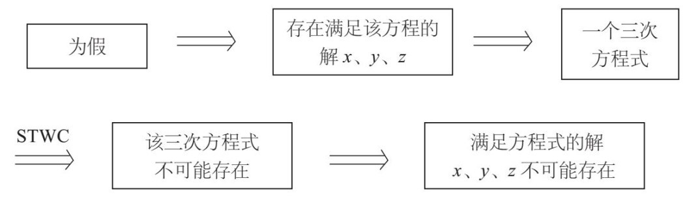
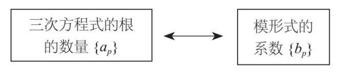
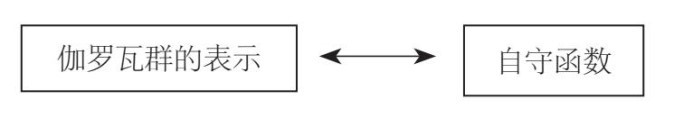

这样的数字。但是，我们现在发现了一个本质上截然不同的数字系统，即有穷集合{0，1，2，…p–1}，其中p是质数，我们可以对该集合进行模p加法和模p乘法运算。该集合叫作包含p个元素的有限域。这些有限域是数字世界中非常重要的群岛，但遗憾的是，我们大多数人都没有听说过这样的群岛。
这样的数字。但是，我们现在发现了一个本质上截然不同的数字系统，即有穷集合{0，1，2，…p–1}，其中p是质数，我们可以对该集合进行模p加法和模p乘法运算。该集合叫作包含p个元素的有限域。这些有限域是数字世界中非常重要的群岛，但遗憾的是，我们大多数人都没有听说过这样的群岛。在第2章讨论对称时，我们发现，SU(3)群的表示对基本粒子的活动有影响作用。朗兰兹纲领关注的焦点也是群的表示，只不过这里的群是指第7章讨论的数域中的伽罗瓦群。相关研究发现，这些表示可以形成数域的“源代码”，携带有关数字方面的重要信息。
朗兰兹的一些想法非同一般。他认为，我们可以从另一种本质迥异的对象[即所谓的“自守函数”（automorphic function），来源于另一个名为调和分析的数学领域]中提取这些信息。自守函数的本质是对谐波的研究，谐波是一些基本声波，其各自的频率会构成倍数关系。朗兰兹认为，交响乐是由各种乐器演奏的声音所对应的谐波经过重叠而构成的，普通的声音与之相似，也是由谐波经过重叠形成的。在数学上，我们可以将已知函数表示成描述谐波的函数（如正弦和余弦等我们熟悉的三角函数）。自守函数则可以被视为我们更加熟悉的这些谐波的高级版本，在利用自守函数完成计算时可以借助多种分析方法。朗兰兹提出了一个令人瞠目结舌的观点：我们可以利用自守函数来研究难度大得多的数论问题。通过这种方法，我们发现数字谱写出了一个不为人所知的“和声”。
我在前言中说过，数学的一个主要作用是对信息进行排序分类，用朗兰兹的话说，即“从看似杂乱无章的线索中理出头绪”。朗兰兹的理念之所以有非凡的意义，正是因为它可以对数论中看似杂乱无章的数据加以整理，使之形成某种规律，表现出对称性与统一性。
如果我们把数学的不同分支领域看成若干大陆，数论就是北美洲，调和分析则像欧洲。多年的发展让我们往来两大洲所需的时间越来越短。过去，我们乘船需要好多天才能到达；现在，我们坐飞机几小时就到了。但是，想象一下，如果在应用某项新技术之后，我们可以从北美洲瞬时到达欧洲，那将会是什么感觉？朗兰兹发现了这两个数学领域之间的联系，他的发现就有这样的效果。
下面我会讨论其中一个令人震惊的联系，这个联系与我们在第6章中讨论的费马大定理有关。
费马大定理的表述看似非常简单，但却内藏乾坤。
xn+yn=zn
该定理指出，满足以上方程式的自然数x、y和z不存在，其中，n>2。
前文说过，这是法国数学家皮埃尔·费马于1637年提出的一个猜想。他在阅读一本旧书时，在书页的边上空白处留下评注，说他找到了一个“美妙绝伦”的证明这种猜想的方法，但是“页边太小，无法写出证明过程”。我们不妨把这个评注称为17世纪具有“推特”风格的证明过程：“我找到了一个美妙绝伦的证法可以证明这个定理，但是很遗憾，我没法全部写下来，因为证明过程超过了140个字符。”
显而易见，费马的证明方法肯定不对。在他之后人们花了350多年才找到真正的证法，而且该证法异乎寻常地复杂。整个历程主要包括两个阶段：第一个阶段是，1986年，肯·里贝特证明费马大定理是志村–谷山–韦伊猜想的必然结果。
（或许，我应该先向大家解释一下猜想这个概念。在数学领域，猜想是指某个人认为某个命题为真，但是尚未找到证明方法。而猜想一经证明，就会转变成定理。）
肯·里贝特的证法指出，如果有自然数x、y、z满足费马方程式，那么我们可以利用这三个自然数构建一个三次方程式，并且该三次方程式具有志村–谷山–韦伊猜想排除的某种属性（我将在下文中解释这个三次方程式和该属性）。因此，如果我们知道志村–谷山–韦伊猜想为真，那么该方程式不可能存在，我们给出的费马方程的解x、y、z也不可能存在。
让我们稍作停顿，把其中的逻辑再梳理一遍。为了证明费马大定理，我们首先假设该定理为假，也就是说，我们假设存在可以满足费马方程式的自然数x、y、z。然后，我们将这三个自然数与一个三次方程式联系起来，结果发现了某些不合要求的属性。根据志村–谷山–韦伊猜想，我们认为该方程式不可能存在。自然数x、y、z也不可能存在。因此，费马方程式无解，从而证明费马大定理为真！我们可以用示意图表示这一证明过程（图中，“费马大定理”简称FLT，志村–谷山–韦伊猜想简称STWC。

这种证明方法叫作“反证法”。首先假设与我们试图证明的命题相对立的命题为真，以此为证明过程的起点（在本例中，我们假设为真的命题是“存在满足费马方程的自然数x、y、z”，该命题与我们想要证明的命题，即费马大定理对立）。经过一系列推理之后，如果我们假设为真的命题经证明是假命题（在本例中，即“存在一个被志村–谷山–韦伊猜想认定不可能存在的方程式”），此时，我们得出结论：作为证明过程起点的那个命题为假，我们想要证明的命题（即费马大定理）为真。
这样，费马大定理的证明只剩下最后一步需要完成：证明志村–谷山–韦伊猜想。在明白了这个道理（1986年，里贝特的研究完成了这个任务）之后，接下来的研究内容就变成了证明志村–谷山–韦伊猜想。多年来，人们提出了好几种证法，但是随后的分析表明，这些证法都存在错误或缺陷。1993年，安德鲁·怀尔斯宣布完成了对该猜想的证明，但是几个月之后，人们却发现他的证法存在一个缺陷。在一段时间里，他的证法似乎也沦落到与众多著名的“伪证明”（non-proof）相同的境地：证明中存在缺陷却无法弥补。
但是，怀尔斯比较幸运。他在数学家理查德·泰勒（Richard Taylor）的帮助下，用了不到一年的时间，就弥补了这个缺陷，两个人一起完成了证明。在一部介绍费马大定理的优秀纪录片中，当怀尔斯回忆起这一时刻时仍抑制不住内心的激动，由此我们可以想象这项研究曾给他留下的切肤之痛。
* * *
所以，对志村–谷山–韦伊猜想的证明是费马大定理证明过程中的一个重要成果。这个猜想本身可以被看作朗兰兹纲领的一个特例，清楚地表明在两个看似无关的领域之间，确实存在朗兰兹纲领所预言的各种联系。
志村–谷山–韦伊猜想是关于某些方程式的一个命题。数学领域的很大一部分工作就是解方程式，诸如，我们希望了解某个方程式在特定域内是否有解？如果有解，应当如何求解？如果存在多个解，那么一共有多少个？为什么有的方程式有解，而有的则无解？
我们在上一章讨论了包含一个变量的多项方程式，例如x2=2。费马大定理讨论的方程式含有三个变量：xn+yn=zn。志村–谷山–韦伊猜想讨论的则是含有两个变量的代数方程式，例如：
y2+y=x3–x2
该方程式的解是使方程式左右相等的一组数字x、y。
但是，我们可以从哪种数字系统中找出这样的数字x、y呢？可选答案不止一个：一些人认为x和y可能是自然数或整数；另一些人认为它们可能是有理数。我们还可以在实数，甚至是复数范畴里求解x、y。这个问题，我们将在下一章进行深入讨论。
研究发现，还存在一种另外的可能性。这种可能性不容易被看出来，但是同样重要：我们可以考虑“以N为模”的根x、y，N为自然数。也就是说，我们需要找到整数x和y，使方程式左右两边都能够得到一个能被N整除的数。
例如，我们求模N=5时的根。此时，有一组显而易见的根：x=0，y=0。此外，还有三个隐蔽性略大的根：x=0，y=4是以5为模的方程式的根，因为方程式左边等于20，右边等于0，左右相差20，而20可以被5整除。同理，x=1，y=0以及x=1，y=4也是以5为模的方程式的根。
我们在第2章谈到圆桌的旋转群时，已经讨论过这种算法。当时，我们发现角度的增加是一种“模360度”加法。也就是说，如果两个角度相加的得数大于360度，我们就会从中减去360度，使之落入0度至360度之间。例如，450度旋转与90度旋转是相同的，因为450度–360度=90度。
我们在使用闹钟时也会遇到这种算法。如果我们在上午10点上班，工作时间为8小时，那么我们几点可以下班呢？10+8=18，因此，我们可能会很自然地回答：“我们18点下班。”在法国这样回答没有任何问题，因为法国人采用24小时时间制（其实，也并不完全对，因为在法国，每个工作日的工作时间通常不超过7小时）。但是在美国，我们会说：“我们下午6点下班。”我们是怎么把18点转换为下午6点的呢？用减法，即18–12=6。
所以，小时与角度的计量在这方面遵循相同的原理。在第一个例子中，我们采用的是“模360度”加法，而第二个例子采用的则是“模12点”加法。
同理，我们能够以任意自然数N为模进行加法运算。考虑0至N–1之间的所有连续整数集合：
{0，1，2，…N–2，N–1}
如果N=12，这个集合就是由所有整点时间构成的集合。在一般情况下，数字12的任务是由数N完成的，因此，让12变成0的不是12，而是N。
我们将这些数字集合的加法运算定义为与整点时间相同的运算。任意给出该集合中的两个数字，对其进行加法运算，如果和大于N，则从和中减去N，使得数变成该集合中的数字。这种操作使这个集合变成了一个群，其中恒等元为数字0：任何其他数字与0相加之后都保持不变。的确，我们有n+0=n。对于该集合中的任意数字n，其“加法逆元”（additive inverse）是N–n，因为n+(N–n)=N，根据规则，该结果与0相等。
例如，令N=3，我们得到集合{0，1，2}和“模3”加法。例如，我们有：
2+2=1 模为3
在这个系统中，因为2+2=4，但是由于4=3+1，因此数字4在模为3时等于1。
如果有人对你说“2加2等于4”是一个绝对准确的事实，你可以回答他（甚至可以用轻蔑的语气）：“是吗？那可不一定。”如果他们追问原因，你就告诉他们：“在进行模3加法运算时，2加2等于1。”
从上述集合中任选两个数字，我们还可以进行乘法运算。乘积可能不在0至N–1之间，但在该范围内应该存在唯一一个数字，它与该乘积的差为某个可被N整除的数。一般说来，集合{1，2，…N–1}不是可以进行乘法运算的群。恒等元的确存在，那就是1，但不是所有元素在模为N时都有乘法逆元。所有元素在模为N时都有乘法逆元的条件是，当且仅当N为质数，即除1与自身以外，不可被任何自然数整除。
前几个质数为2，3，5，7，11，13，……（1通常不包含在内）。除2以外的所有偶数都不是质数，因为它们都可以被2整除；9也不是质数，因为9可以被3整除。质数的数量为无穷多——无论一个质数有多大，总存在一个比它更大的质数。因为质数不可被除1和自身之外的其他自然数整除，所以它们是自然数中的基本粒子。而其他自然数，都可以通过质数乘积的独特形式来表现，例如，60=2×2×3×5。
我们现在选定一个质数，通常我们把它记作p。那么，0至p–1的所有连续整数的集合就是：
{0，1，2，3，4，…p–2，p–1}
我们考虑对该集合进行两种运算：当模为p时的加法和乘法运算。
从上面的讨论可以看出，该集合是可以进行模p加法运算的。更值得关注的是，如果去掉数字0，只考虑1至p–1之间所有的连续整数的集合，即{1，2，…p–1}，我们发现它就是可以进行模p乘法运算的群。元素1是乘法的恒等元（这是显而易见的），而且我可以宣称在1至p–1之间的任意自然数都有一个乘法逆元。
例如，如果p=5，我们发现：
2×3=1 模为5
以及：
4×4=1 模为5
这说明模为5时2的乘法逆元是3，模为5时4的乘法逆元是其自身。研究证明，该结论大体上是正确的。
在我们的日常生活中，我们习惯于使用整数或分数之类的数字。有时，我们也会使用像这样的数字。但是，我们现在发现了一个本质上截然不同的数字系统，即有穷集合{0，1，2，…p–1}，其中p是质数，我们可以对该集合进行模p加法和模p乘法运算。该集合叫作包含p个元素的有限域。这些有限域是数字世界中非常重要的群岛，但遗憾的是，我们大多数人都没有听说过这样的群岛。
尽管该数字系统似乎与有理数等人们常用的数字系统大不相同，但它们同样具备一些重要的属性：在进行加、减、乘、除运算时，这些系统都是封闭的。因此，那些在有理数系统中可以进行的操作，在这些看上去非常神秘的有限域中同样可行。
事实上，这些有限域已经不像从前那样神秘了。近年来，有限域在实践中，尤其在编码学中，发挥了重要作用。我们在网上购物时，需要输入信用卡卡号。在给信用卡卡号加密时，需要使用模为质数的算法，而决定该算法的函数与上文讨论的函数十分相似。
我们接着讨论三次方程式：
y2+y=x3–x2
看看模为p（p为变化的质数）时方程根的情况。比如，上文讨论过当模为5时方程式有4个根。但是请注意，当模为其他质数（例如，p=7或p=11）时，方程根的数量未必相同。方程式的根的数量的确取决于我们运算时所取的模p的值。
现在，我们考虑下面这个问题：在模为p时，方程根的数量与p有什么关系？当p的数值不大时，我们可以数出根的具体数量（有时也可借助计算机来计算），并将其绘制成一张不大的表格。
经过一段时间的研究，数学家们已经发现，在模p为数值不大的质数时，方程根的数量接近于p。但根的实际个数与预计的个数（即p）之间存在差异，我们把这种差异定义为ap。因此，当模为p时上述方程式的根的数量等于p–ap。对于特定的p，ap可能是正值也可能是负值。例如，上面的讨论表明，当p=5时，方程式有4个根。由于4=5–1，因此a5=1。
利用计算机，我们可以计算出当p为较小质数时ap的值。这些值似乎没什么规律可言，计算时似乎也没有确定的公式或规则可用。更糟糕的是，随着p值增大，计算的复杂程度显著增加。
但是，如果我告诉大家有一个非常简单的规则，可以一次性生成所有ap的值，大家是否会感到吃惊呢？
大家可能很想知道，我这里提到的能生成这些数字的规则到底是什么呢？我们先考虑一个叫作“斐波那契数列”（Fibonacci numbers）的序列：
1，1，2，3，5，8，13，21，34，…
该数列是一位意大利数学家在1202年出版的专著中提出的，（当时他讨论的是兔子交配问题，没想到吧）因此它以该数学家的名字命名。斐波那契数列在自然界中随处可见：花瓣的排列、菠萝表面的纹理等都包含着斐波那契数列的身影。该数列的其他应用也非常广泛，例如股票交易技术分析中使用的“斐波那契回调”（Fibonacci retracement）。
斐波那契数列的定义是：前两个数字为1，其后每个数字等于前两个斐波那契数字之和。例如，2=1+1，3=2+1，5=3+2，等等。我们把第n个斐波那契数字定义为Fn，则有F1=1，F2=1，且：
Fn=Fn–1+Fn–2，n>2
从原则上来说，对于任意数字n，我们都可以运用该规则算出第n个斐波那契数。但是，真想算的话，我们先要算出所有斐波那契数Fi的值（i的值在1到n–1之间）。
不过，研究发现，这些数字还可以利用下面这个方法生成。我们看一下下面这个级数：
q+q(q+q2)+q(q+q2)2+q(q+q2)3+q(q+q2)4+…
用文字表述就是，辅助变量q与表达式（q+q2）的所有幂的乘积之和。去掉括号，就会得到一个无穷级数，其前几项为：
q+q2+2q3+3q4+5q5+8q6+13q7+…
例如，我们计算含有q3的项。q3只可能出现在q，q(q+q2)和q(q+q2)2之中。[的确，求和算式中的其他表达式，如q(q+q2)3，包含的q的幂都大于3。]三者当中，第一项不含q3，其余两项各含有一个q3，因此，它们的和是2q3。我们可以用类似的方式算出该级数的其余各项。
如果分析该级数的前几项，我们就会发现，当n的值在1到7之间时，qn前面的系数是第n个斐波那契数Fn。例如，该级数有一项为13q7，第7个斐波那契数F7=13。研究证明，对于所有n，它们都存在这个特点。因此，数学家把该无穷级数称作斐波那契数列的生成函数。
我们可以利用这个重要函数建立一个有效的计算公式，这样一来，无须先算出前面的所有斐波那契数就可以算出第n个斐波那契数。不过，即便不考虑这个生成函数在计算方面的作用，我们也能体会到它的衍生价值：该生成函数无须一个自引用递归程序，就能一次性算出所有的斐波那契数。
* * *
我们现在回过头来，继续研究当模为质数时三次方程式的根的数量ap。我们可以把这些数字看成类似斐波那契数（尽管我们用质数p标记数字ap，而用自然数n标记斐波那契数Fn，但是，我们可以忽略这个不同点）的数字。
我们可能会认为，这些数字不应该存在某种生成规则，但是，1954年，德国数学家马汀·艾希勒（Martin Eichler）却对此有所发现。我们来看一下下面这个生成函数：
q(1–q)2(1–q11)2(1–q2)2(1–q22)2(1–q3)2(1–q33)2(1–q4)2(1–q44)2…
用文字表述就是，(1–qa)2形式的因子的乘积再乘以q，a是以n和11n这种形式出现的一系列数字，其中n=1，2，3，…。去掉括号，就会得到：
(1–q)2=1–2q+q2，(1–q11)2=1–2q11+q22，…
然后，所有因子相乘，合并同类项，我们就会得到一个无穷级数，其前几项为：
q–2q2–q3+2q4+q5+2q6–2q7–2q8–2q9–2q10+q11–2q12+4q13+…
其中，省略部分代表q的幂为13次以上的后续各项。尽管这是一个无穷级数，但是各项的系数是确定的，因为系数是由上述乘积中有限数量的因子决定的。我们把qm前面的系数记作bm，于是有b1=1，b2=–2，b3=–1，b4=2，b5=1，等等。我们可以通过笔算或计算机方便地计算出这些数值。
艾希勒还有一个惊人发现：对于所有质数p，系数bp都等于ap。换句话说，即a2=b2，a3=b3，a5=b5，a7=b7，等等。
比如，我们假设p=5，来检验一下上述发现是否为真。此时，我们观察该生成函数就可以发现q5的系数b5=1。同时，我们已经讨论过当模p=5时，三次方程式有4个根。a5=5–4=1，因此a5=b5成立。
我们开始时讨论的问题似乎极为复杂：当模p为所有质数时，计算三次方程式：
y2+y=x3–x2
的根的数量。然而，我们现在发现，该方程式的根的所有情况都包含在一个表达式中：
q(1–q)2(1–q11)2(1–q2)2(1–q22)2(1–q3)2(1–q33)2(1–q4)2(1–q44)2…
这个表达式就是一个密码，当模为所有质数时，三次方程式的根的数量的信息，全部包含其中。
在研究三次方程式时，我们可以采用的一个有效方法，就是把三次方程式看成一个复杂的有机体，同时把方程式的根看成该有机体的各种遗传特征。我们知道，这些遗传特征都以编码的形式存在于DNA分子中。同样，对于上述这个三次方程式而言，生成函数就像DNA，包含了该方程式的所有复杂特征。而且，这个生成函数的定义还十分简单。
更让我们惊讶的是，如果q是一个绝对值小于1的数字，上述无穷级数的和就会收敛为一个确定的数字。因此，我们得到一个关于q的函数。而且，研究发现，该函数具有一个非常特殊的属性，即我们熟悉的正弦和余弦函数等三角函数所具有的周期性。
正弦函数sin（x）具有周期性，其周期为2π，也就是说sin(x+2π)=sin(x)，sin(x+4π)=sin(x)，推而广之，对于所有整数n，都有sin(x+2πn)=sin(x)。我们这样设想，每一个整数n都会产生正弦曲线的对称操作，即曲线上的每个点x都会移动到x+2πn的位置上。因此，整数群可以被视为该曲线的对称群。正弦函数的周期性表明该函数在该群中属于不变量。
同理，研究发现，上述变量q的艾希勒生成函数在某个对称群中也属于不变量。这里，我们不能取q值为实数，而要取复数（我们将在下一章讨论这个问题）。这样一来，我们也不能像在分析正弦函数时那样把q看成线上的一个点，而是将其看成复平面上单位圆盘内的一个点。该点具有对称的属性：在该单位圆盘上存在对称群，而该函数在这个群之内是不变的。具有这种不变性的函数被称作模形式。
该圆盘的对称群内涵丰富，为了解其中的特点，我们来看一下下面这幅图（见下页）。图中的圆盘被分割成无数的黑白三角形。
对称操作通过交换三角形来实现。事实上，对于任意两个三角形，总是存在可互换的对称操作。尽管该圆盘的这些对称操作十分复杂，但我们可以通过类比来了解其中的原理。当整数群作用于正弦曲线时，对称操作的活动区间是[2πm，2π(m+1)]。正弦函数在这些对称操作中保持不变，艾希勒生成函数在该圆盘的对称操作中也保持不变。
我在本章的开头处曾说过，正弦函数是曲线调和分析中所应用的“谐波”（即基本波形）的一个最简单的实例。同样，艾希勒函数以及其他模形式就是单位圆盘调和分析中所研究的谐波。
根据艾希勒的洞见，当模为质数时，三次方程式的根的数量看似毫无规律，但它实际上受到一个生成函数的制约，而该生成函数又遵从一个精致典雅的对称操作的约束，由此可以看出，这些数字中蕴藏着某种和谐与秩序。与之相似，朗兰兹纲领仿佛也具有某种神奇的力量，将数字、对称操作与方程式编织成了一块图案精美的锦缎。
在本书的开头部分，我说某个数学成果“美丽迷人”或者“精致典雅”，也许你会觉得我的说法很奇怪。现在，大家应该能明白我的意思了吧。这些高度抽象的概念竟然如此和谐统一、水乳交融，的确令人叹为观止、难以置信。这种和谐统一揭示了抽象概念背后内涵丰富、神秘莫测的内容，仿佛为我们掀开了一层幕布，一直不为我们所知的神秘存在让我们眼前一亮。这就是现代数学的魅力所在，也是现代世界的神奇所在。
艾希勒的这个数学成果固然拥有与生俱来的内在美，为我们揭示了看似无关的数学领域之间出人意料的联系，但是人们仍不免对其产生一丝疑惑：这个成果究竟有没有实际应用价值呢？有这样的疑问纯属正常。目前我的确不清楚它有哪些实际应用价值，不过，我们上文讨论的在包含p个元素的有限域的基础之上形成的三次方程式（其图像为椭圆曲线），在编码学中得到了广泛应用。因此，如果有一天，人们将艾希勒的研究成果广泛地应用到实践领域当中，并取得像编码算法那样的显著效果，我一点儿也不会感到吃惊。
* * *
志村–谷山–韦伊猜想是艾希勒研究成果的一个推广。根据该猜想，对于类似上文所讨论（这里我们稍加限制）的所有三次方程式，当模为质数时方程式的根的数量都是某个模形式的系数。此外，三次方程式与某种模形式之间存在一一对应关系。
我所说的“一一对应”，指的是什么呢？假设你有5支钢笔和5支铅笔。我们可以为每支钢笔搭配一支铅笔，而且，每支铅笔都只能搭配一支钢笔，这就叫一一对应。
搭配的方法有很多种。但是，假定在一一对应关系中，每一组中钢笔和铅笔长度都相等，那么，我们就把该长度叫作“不变量”，并且认为这种对应关系可使该不变量保持不变。如果所有钢笔的长度都不一样，那么由该属性确定的对应关系将只有一种。
现在我们讨论志村–谷山–韦伊猜想中的一一对应关系。在构成这种对应关系的两方中，一方是类似于上文所讨论的三次方程式。这些方程式就是“钢笔”，对于每个方程式而言，数字ap就是它的不变量。（就像钢笔的长度一样，不过现在有不止一个不变量，而是由质数p标记的一系列数字。）
另一方是模形式。这些模形式就是“铅笔”，对于每一个模形式而言，系数{bp}就是它的不变量（就像铅笔的长度一样）。

也就是说，对于任意一个三次方程式，总是存在一个模形式，使ap=bp（p为质数），反之亦然。
现在，我可以解释志村–谷山–韦伊猜想与费马大定理之间的关系了。我们从费马方程式的根入手，先构建一个三次方程式。但是，肯·里贝特证明，当模为质数时该三次方程式的根的数量不可能成为志村–谷山–韦伊猜想所认为的必然存在的某个模形式的系数。一旦志村–谷山–韦伊猜想得到证明，我们就可以断定这样的三次方程式不存在。因此，费马方程式无解。
志村–谷山–韦伊猜想是一项非常了不起的成果。数字ap来源于对当模为质数时方程式的根的数量的研究，属于数论的范畴，而数字bp则是模形式的系数，属于调和分析的范畴。数论与调和分析这两个领域相去甚远，但是事实证明，两者研究的对象毫无分别！
* * *
将志村–谷山–韦伊猜想稍做变化，把其中出现的每个三次方程式都替换为伽罗瓦群的某种二维表示，它就可以变成朗兰兹纲领的一个特例。我们从该三次方程式可以很自然地得到该二维表示，数字ap则可以直接被应用到该表示之中（而不是该三次方程式当中）。因此，志村–谷山–韦伊猜想可以表现为伽罗瓦群与模形式的二维表示之间的关系。
大家应该还记得，我在第2章里曾说过，群的二维表示就是用二维空间（即平面）的对称操作为该群的各个元素赋值的规则。例如，我们在第2章里讨论过循环群的二维表示。
推而广之，朗兰兹提出的一系列猜想还可以通过人们意想不到的、更为深奥的方式表现，在伽罗瓦群的n维表示（与志村–谷山–韦伊猜想中三次方程式相对应的二维表示的推广）与所谓的自守函数（志村–谷山–韦伊猜想中模形式的推广）之间建立联系。

几乎没有人怀疑这些猜想的正确性，但是，时至今日，虽然好几代数学家在过去的45年里已经为之付出了大量的心血，这些猜想的大多数内容却仍然有待证明。
* * *
也许，大家会觉得奇怪：一开始时数学家是如何提出这些猜想的呢？
这个问题涉及数学洞察力的本质。要培养敏锐的眼光，去发现前人未能发现的规律和联系，需要经年累月的辛勤付出，绝不可能一蹴而就。经过不断努力，你就会慢慢地捕捉到新现象、新理论的蛛丝马迹。刚开始，你也会怀疑自己。之后，你又会想：“如果真的是这样呢？”于是，你开始取样计算，检验自己的想法。有时，这些计算很难完成，你必须在大量的复杂公式中摸索前进，一不留神就会犯错误。失败后，你需要换一种方法再尝试。就这样，你不断地犯错误，不断地尝试。
忙活了一天（一个月，甚至一年）之后，你发现自己的想法是错误的，你必须改弦更张、另起炉灶。这样的情况并不少见，失望沮丧的情绪不可避免地涌上你的心头。你觉得自己浪费了大量时间，最终却两手空空，这样的结果实在很难接受。但是，你不肯轻言放弃。你走回制图板前，分析更多的数据，从前面犯下的错误中汲取经验教训，努力找到一个更好的想法。突然有一天，你灵光一现。此时，你必须充分发挥想象力，让思想的浪潮把你带到尽可能远的地方，哪怕你因此得到的想法乍看起来荒诞不经。
志村–谷山–韦伊猜想可能让提出该猜想的数学家本人都觉得不可思议吧，这些想法太疯狂了！的确，该猜想的基础是数学家们在前期研究中已经取得的成果，包括我们在上文中讨论过的艾希勒的研究成果。艾希勒提出，对于某些三次方程式，当模为p时，方程式的根的数量就是某个模形式的系数。他的这个研究成果随后被志村五郎（Goro Shimura）推广到所有的三次方程式中。在当时的人眼中，这个“创举”肯定极为大胆和疯狂。1955年9月，在东京举行的代数数论国际研讨会上，日本数学家谷山丰（Yutaka Taniyama）首次以问题的形式提出这个极为大胆的猜想。
我一直非常疑惑：谷山怎么敢提出这么疯狂的想法呢？在国际研讨会这样的正式场合公开提出这样的想法，他的勇气从何而来呢？
我们可能永远也找不到答案，因为谷山在提出这个伟大的想法之后不久，就于1958年11月自杀身亡了，年仅31岁。这不能不令人扼腕叹息，但更可悲的是，谷山计划迎娶的那位女士也步了他的后尘，结束了自己的生命。她自杀前给世人留下了一纸遗言：
我们有过海誓山盟，无论天涯海角，永不分离。现在，他离我而去，我也要离开这个尘世去陪伴他。
此后，志村五郎对这个猜想进行了完善，使之更为精准。志村是谷山的好友兼同事，也是一位日本的数学家，他大部分时间都在普林斯顿大学任职，现在是该校的荣誉教授。志村在数学领域做出了种种重大贡献，其中有很多都与朗兰兹纲领有关，有好几个基本概念都是以他的名字命名的[例如“艾希勒–志村同余关系”（Eichler-Shimura congruence relations）和“志村簇”（Shimura varieties）]。
志村曾写过一篇纪念谷山的文章，在这篇文章中，他对谷山的评价令人难忘。
尽管他从不草率行事，但他不断地犯一些小错误。不过，他天赋异禀，所犯错误大多不是方向性错误，也无伤大雅。我对他的天赋颇为仰慕，试图向他学习，结果却发现自己纯属东施效颦。
用志村的话说，谷山在1955年9月的东京研讨会上“提出自己的猜想时，对问题的表述不是非常仔细”，有的地方还需要修改。不过，瑕不掩瑜，谷山的这个革命性洞见引领着数学领域获得了20世纪最为卓著的一个成就。
该猜想的名称中使用的第三个人名是安德烈·韦伊。我在前面已经提到过韦伊，他是20世纪数学界的一位泰斗级人物，以睿智著称于世。韦伊出生于法国，于“二战”期间来到美国。他先是在美国多所大学从事学术研究工作，1958年，他进入普林斯顿大学高等研究院，一直工作到1998年他去世为止，享年92岁。
1981年的安德烈·韦伊。照片来源：赫尔曼·朗绍夫（Herman Landshoff），美国新泽西州普林斯顿大学高等研究院谢比·怀特与里昂·莱维档案馆
韦伊与朗兰兹纲领也有着密切的联系。罗伯特·朗兰兹在一封著名的信中首次阐述了他的想法，收信人正是韦伊。此外，韦伊还是志村–谷山–韦伊猜想名称中提及的第三个人。更为重要的是，安德烈·韦伊在给他妹妹的一封信中，对数学“大趋势”进行了深入剖析，借此我们可以更好地理解朗兰兹纲领。我们在下一章中将对此进行讨论，这些内容是把朗兰兹纲领引入几何学领域的桥梁。